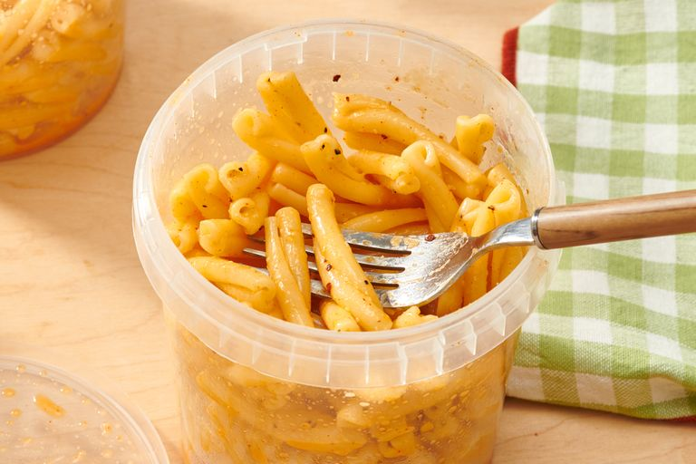

Butter Pasta

Description
This easy hot honey butter pasta turns plain pasta into a sweet, spicy,
buttery dish in minutes. Just add butter, hot honey, Parmesan, and
seasonings to freshly cooked or leftover noodles, then shake everything
together in a deli container. One step—no extra dirty dishes.
Ingredients
- 2 cups hot cooked pasta of your choice
- 3 tablespoons butter
- 1/4 cup grated Parmesan cheese
- 1 tablespoon hot honey
- 1/4 teaspoon garlic powder
- 1/4 teaspoon salt
- 1/4 teaspoon ground pepper
- 1 pinch red pepper flakes
Steps
-
Combine hot pasta, butter, Parmesan cheese, hot honey, garlic powder,
salt, pepper, and red pepper flakes in a 24-ounce deli container. Shake
until well combined. Serve immediately.
Home